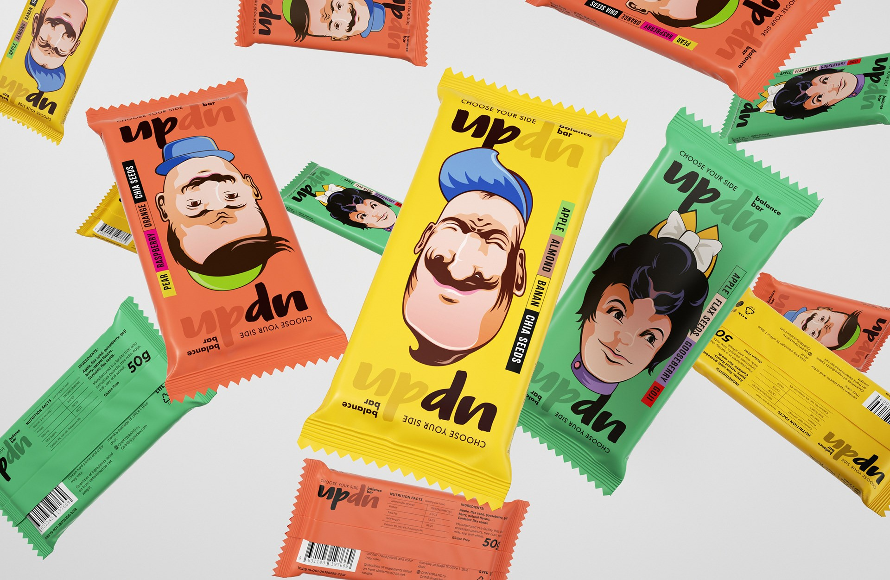

FACEBOOK Hypertext Markup Language (HTML) is the standard markup language for creating web pages(strong tag로 강조하고 u tag로 밑줄) and web applications.
Web browsers receive HTML documents from a web server or from local storage and render them into multimedia web pages. HTML ~ brakets.
 Attribute 속성은 앞 뒤 상관없음. 좀 더 태그의 정확한 소스문법.